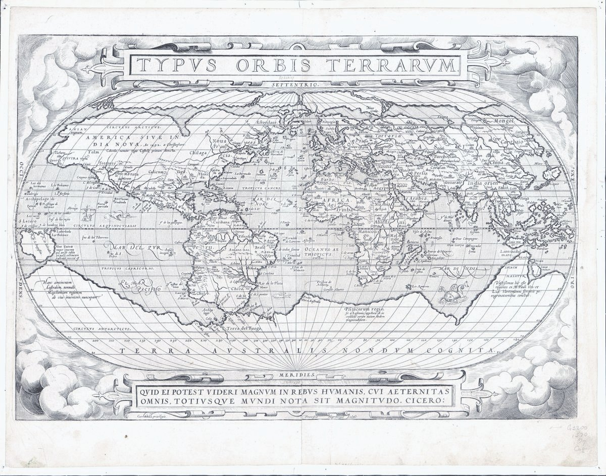

в работе
Атласпомогающих профессий
Помогающие специалисты — это люди, чья работа состоит в том, чтобы помогать другим людям справляться с жизнью: со здоровьем, переживаниями, отношениями, работой, деньгами, бытом, утратой, поиском смысла.
Атлас ничего не рекомендует и не оценивает конкретных людей. Он объясняет, кто есть кто, за что отвечает, с какими запросами работает и где заканчивается его зона.

С каким вопросом к кому
Семьи профессий
- I19Тело и здоровьеТелесное здоровье, восстановление функций, движение, питание.
- II29Психика и эмоцииПсихическое состояние, переживания, расстройства, психологическое развитие.
- III9Отношения и семьяПары, семья, дети, конфликты между людьми.
- IV8Сообщества и взаимопомощьГруппы, местные сообщества, волонтёрство, адаптация на новом месте.
- V15Работа и развитиеКарьера, обучение, цели, рабочая жизнь.
- VI14Деньги и правоФинансы, документы, права, споры с юридическими последствиями.
- VII10Быт и социальная поддержкаПовседневная жизнь, уход, жильё, социальные услуги, бытовая сторона переезда.
- VIII9Утрата и конец жизниУмирание, паллиатив, похороны, горе.
- IX5Дух и смыслВера, ценности, экзистенциальные вопросы, практики созерцания.
- X4История и памятьРод, биография, наследие, семейная память.
Опора для помогающих 3 Отдельный слой: альтернативные и эзотерические практики 10Все специалисты списком →
Как устроен атлас
У каждого факта есть источник; то, что не удалось проверить по первоисточнику, помечено знаком ∗.
Как устроен атлас →Как проверяем →Словарь →Сравнить специалистов →
— не удалось проверить по первоисточнику
Если нашлась ошибка —напиши в Telegram.